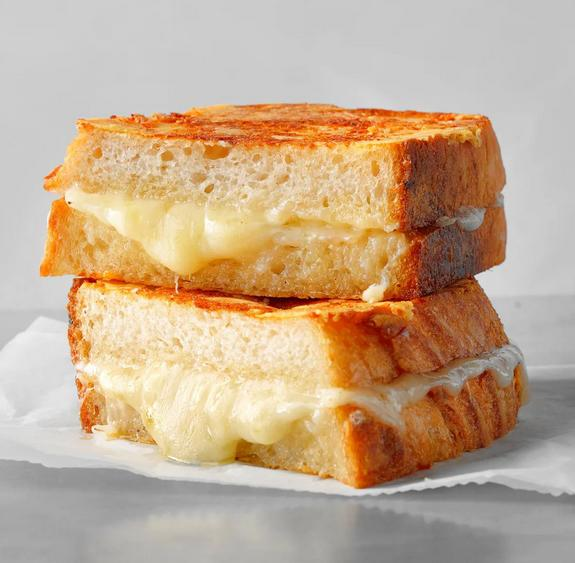

Grilled Cheese Sandwich

Description
Spreading a mixture of mayo and butter on the bread creates a delightfully crispy crust with the well-loved, wonderful flavor of butter one expects on a grilled cheese sandwich.—Josh Rink, Taste of Home Food Stylist
Ingredients
- 6 tablespoons butter, softened, divided
- 8 slices sourdough bread
- 3 tablespoons mayonnaise
- 3 tablespoons finely shredded Manchego or Parmesan cheese
- 1/8 teaspoon onion powder
- 1/2 cup shredded sharp white cheddar cheese
- 1/2 cup shredded Monterey Jack cheese
- 1/2 cup shredded Gruyere cheese
- 4 ounces Brie cheese, rind removed and sliced
Steps
- Spread 3 tablespoons butter on 1 side of bread slices. Toast bread, butter side down, in a large skillet or electric griddle over medium-low heat until golden brown, 2-3 minutes; remove. In a small bowl, mix together mayonnaise, Manchego cheese, onion powder and remaining 3 tablespoons butter. In another bowl, combine cheddar, Monterey Jack and Gruyere.
- To assemble sandwiches, top toasted side of 4 bread slices with sliced Brie. Sprinkle cheddar cheese mixture evenly over Brie. Top with remaining bread slices, toasted side facing inward. Spread mayonnaise mixture on the outsides of each sandwich. Place in same skillet, and cook until bread is golden brown and cheese is melted, 5-6 minutes on each side. Serve immediately.